| 日付 | 2022年4月2日（土） - 2022年4月3日（日） |
|---|---|
| メンバー | 家族（長女・11歳、長男・8歳、両親、姉一家） |
| アクセス | 車 |
2日目
本日は朝から雨予報。外に出てみると、どんよりとはしているが、幸い雨は降っていない。
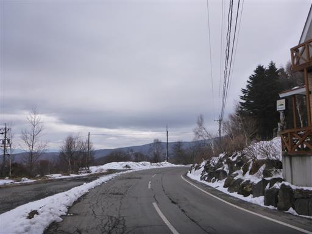
つららができている。気温は相当に低い。
1泊お世話になった宿を後にする。朝食が8時と遅めなのが今一だが、
それ以外は全体的に満足できる宿だった。
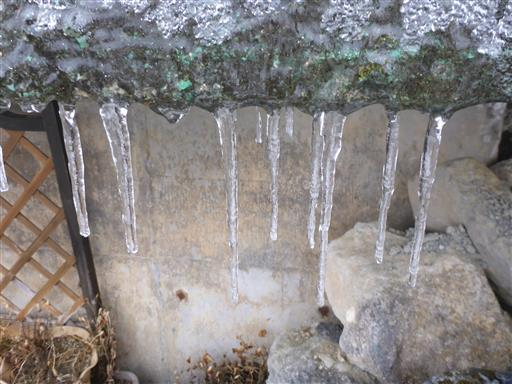
出発は9時半。時間が中途半端なので、白樺湖で少し散策をする。
アヒルボートは陸揚げされていて、営業はしていないようだ。
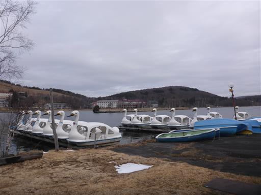
白樺湖に突き出る半島の先にある池の平神社にお参りする。
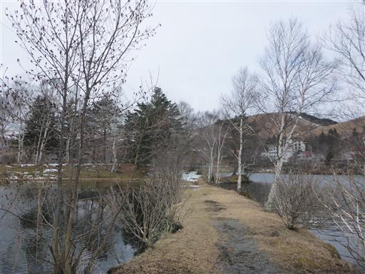
湖畔に立つシラカバ。
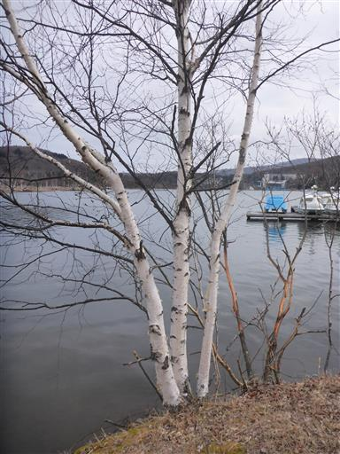
池の平神社。背景は蓼科山だ。
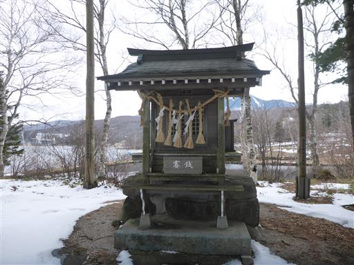
湖に浮かぶ鳥居。
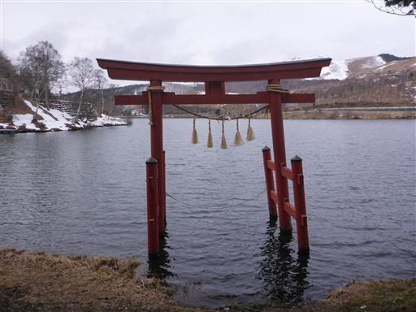
場所を諏訪湖に移動する。11:10～予約していた諏訪湖ダックツアーに参加。
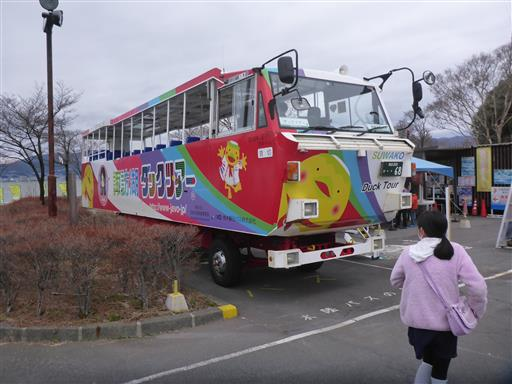
チョークで描かれた謎のキャラクター。
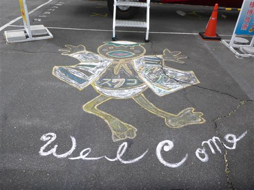
乗車。このバス、窓が無くて、走り出すとこの上なく寒い。
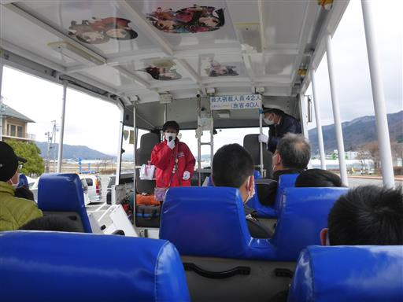
水陸両用のバス。途中で諏訪湖にダイブし、ここからは船になる。
風が強く湖は中止かもと事前に言われていたので、無事に行けて良かった。
湖に入らないならこのバスに乗る意味がほとんどない。
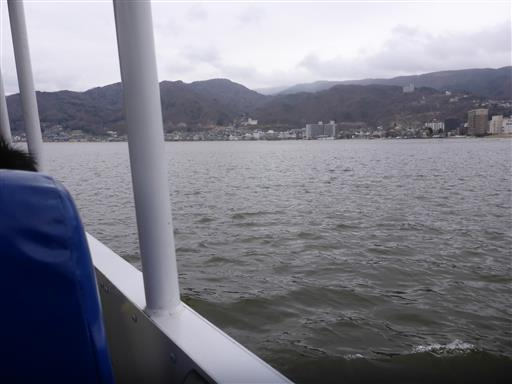
高島城の側を通る。行先の候補にはなっていたが、今回は行く機会が無かった。
春は桜がきれいらしいが、寒いこの地では満開まであと2～3週間はかかりそうだ。
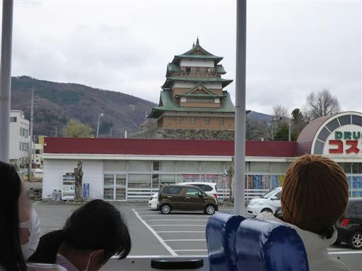
凍え死にそうなくらい寒いツアーが終わり、体を温めるため
発着の場所となったSUWAガラスの里に立ち寄る。
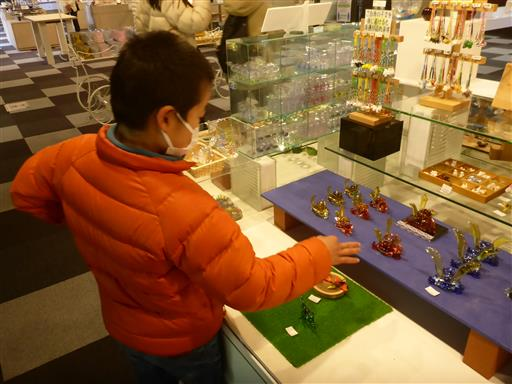
昼食は八洲でそばを食べる。信州と言えばそばだ。
そば屋を出ると雨が降ってくる。半日天気がもってくれてよかった。
今回は初めての親族旅行。それなりに楽しめて良かった。子供達も満足していた。
いかんせん寒かったので、次はもう少し暖かい季節に計画を立てたいものだ。
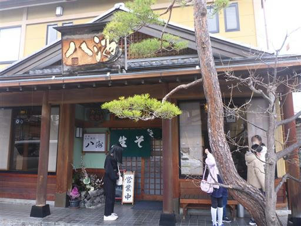